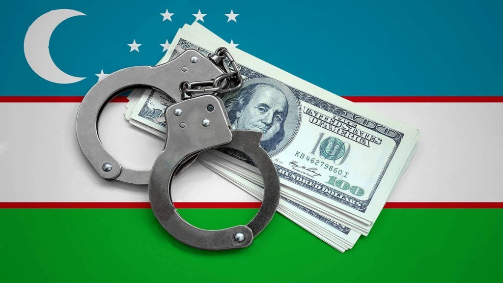

"Korrupsiyaga qarshi "Favqulodda holat":"
2026-yil korrupsiyaga qarshi kurashda "favqulodda holat" yili deb e'lon qilindi. Barcha idoralarda komplayens-nazorat xizmati va Hisob palatasining doimiy vakili faoliyati yo‘lga qo‘yildi.
2026-yil O‘zbekiston tarixida korrupsiyaga qarshi kurashning mutlaqo yangi va keskin bosqichi — "Favqulodda holat" yili sifatida boshlandi. Bu tashabbus shunchaki balandparvoz shior emas, balki davlat boshqaruvining barcha bo‘g‘inlarida korrupsiyaga nisbatan "nol bardoshlilik" (zero tolerance) tamoyilini amalda joriy etishga qaratilgan yaxlit tizimdir. Ushbu yangicha yondashuvning tub mohiyati shundaki, endilikda korrupsiyaga qarshi kurash faqatgina huquq-tartibot idoralarining vazifasi bo‘lib qolmay, har bir vazirlik, hokimlik va davlat tashkilotining ichki ustuvor yo‘nalishiga aylandi. Davlat rahbari tomonidan belgilab berilgan ushbu tizimga ko‘ra, barcha davlat idoralarida komplayens-nazorat xizmati va Hisob palatasining doimiy vakillari faoliyati yo‘lga qo‘yildi. Bu xodimlarning eng muhim jihati shundaki, ular bevosita o‘zlari ishlayotgan tashkilot rahbariga emas, balki vertikal tartibda Prezident Administratsiyasi qoshidagi tegishli xizmatga bo‘ysunadi va hisob beradi. Bu esa "tanish-bilishchilik" yoki "mahalliychilik" omillarini chetga surib, xolis nazoratni ta’minlash imkonini beradi. Mazkur "favqulodda holat" rejimida hech bir amaldor, uning darajasi yoki o‘tmishdagi xizmatlaridan qat’i nazar, qonun oldida daxlsiz emasligi qat’iy belgilab qo‘yildi.

Tizimning texnologik asosi sifatida "Raqamli komplayens" va sun’iy intellektga asoslangan "Xavf-tahlil markazi" platformalari ishga tushirildi. Bu tizimlar orqali davlat xaridlari, budjet mablag‘larining sarflanishi va kadrlar siyosati real vaqt rejimida (online) nazorat qilinmoqda. 2026-yilning sentyabriga qadar O‘zbekistondagi 160 dan ortiq soha va 208 ta tuman-shahar bo‘yicha "Korrupsiya xavflari xaritasi" shakllantirilishi belgilangan bo‘lib, bu "qizil hudud"larni aniqlash va preventiv, ya’ni oldini oluvchi zarbalar berish imkonini beradi. Shuningdek, 2026-yildan boshlab davlat xizmatchilari uchun "sovutish davri" joriy etildi. Unga ko‘ra, sobiq amaldor ishdan bo‘shaganidan keyin ikki yil davomida o‘zi avval nazorat qilgan yoki bevosita aloqador bo‘lgan xususiy kompaniyalarda faoliyat yuritishi taqiqlanadi. Bu "manfaatlar to‘qnashuvi"ning oldini olishdagi inqilobiy qadamlardan biri bo‘ldi. Shuningdek, xalqaro investitsiya loyihalarida shaffoflikni ta’minlash maqsadida qiymati 50 million dollardan yuqori bo‘lgan barcha loyihalar majburiy antikorrupsion ekspertizadan o‘tkaziladigan bo‘ldi.

Jamoatchilik nazorati ham ushbu yilda yangi bosqichga ko‘tarildi. 1-apreldan boshlab ishga tushadigan yangi Antikorrupsion media-portal orqali fuqarolar davlat idoralaridagi shubhali holatlar haqida xabar berishlari va bu jarayonni shaxsan kuzatib borishlari mumkin. Korrupsiyaga qarshi kurashga hissa qo‘shgan fuqarolarni rag‘batlantirishning yangi mexanizmlari, jumladan, maxsus ko‘krak nishonining ta’sis etilishi ham ko‘zda tutilgan. Muhim bir yangilik — "Korrupsiyasiz soha" va "Toza biznes" dasturlari doirasida tadbirkorlik subyektlari bilan munosabatlar to‘liq raqamlashtirilib, inson omili minimal darajaga tushirildi. Endilikda komplayens xizmatining ishiga to‘sqinlik qilish yoki uning faoliyatiga aralashish korrupsiyaga sheriklik sifatida baholanmoqda, bu esa inspektorlar va nazoratchilarning mustaqilligini huquqiy jihatdan kafolatlaydi. 2026-yil yakuniga ko‘ra, ushbu chora-tadbirlar natijasida davlat xarajatlarining shaffofligi ortishi, xalqaro reytinglardagi O‘zbekiston o‘rnining tubdan yaxshilanishi va eng muhimi, xalqning davlat idoralariga bo‘lgan ishonchi yangi darajaga chiqishi kutilmoqda.